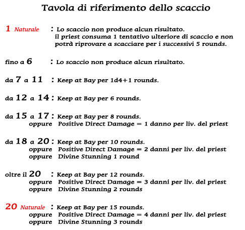
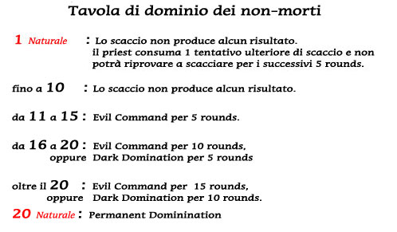

Alcune divinità areliane donano ai loro seguaci il potere di contrastare (o controllare i non-morti). Questo potere è sottoposto a specifiche variazioni a seconda della singola divinità che lo concede, infatti le regole seguenti sono da considerarsi generali e saranno derogate da quelle specifiche previste dalla singola divinità.
Azione di scaccio
Scacciare i non-morti è un'azione che richiede un casting time pari a 1 round nel quale chi lo effettua pronunzierà i salmi della propria divinità (occorre quindi che abbia la possibilità di parlare come un componente vocale di un incantesimo), avrà quindi effetto come ultima azione del round in questione e la durata degli effetti dello scaccio inizierà a decorrere dal round immediatamente successivo. Per poter scacciare occorre che il personaggio impugni in una mano il suo simbolo sacro (deve avere quindi una mano libera, mentre l'altra può restare impegnata, ad es. con lo scudo o mantenendo un'arma a due mani) durante l'azione di scaccio inoltre perderà i bonus della destrezza alla propria classe armatura (non quelli dello scudo se lo possiede). Lo scaccio comunque non richiede concentrazione per cui avrà effetto anche se chi lo esegue subisce ferite durante l'azione.
Numero di undead influenzati dallo scaccio
Una volta effettuato lo scaccio occorre verificare su quante creature ha effetto lo stesso. Gli effetti dello scaccio si estendono sulle creature non morte che si trovano alla vista del chierico entro 21 metri di distanza dallo stesso. Non tutte le creature non-morte subiranno gli effetti dello scaccio ma un chierico potrà influenzare un numero di dadi vita pari a 1d6 ogni due livelli (1d6 al 1° e 2° livello, 2d6 al 3° e 4° livello, 3d6 al 5° e 6° livello , e così via). Qualora nell'area si trovino undead di tipo diverso lo scaccio avrà effetto prima su quelli che impongono una penalità al tiro di scaccio minore e poi mano mano su quelli più forti (a parità di penalità imposta al tiro di scaccio prima sui non morti meno intelligenza e poi sugli altri). Il chierico può scegliere quali non morti influenzare solo a parità di penalità al tiro di scaccio e intelligenza. Comunque deve effettuare la scelta prima del tiro sul potenziale intrinseco dello scaccio.
Numero di scacci disponibili
Ogni giorno un chierico ha la facoltà di utilizzare un numero di scacci pari a 2 + 1 per ogni 3 livelli di esperienza (per eccesso). Quindi un priest di 1°, 2° o 3° livello avrà 3 scacci, un priest di 4°, 5° o 6° livello avrà 4 scacci, un priest di 7°, 8° o 9° livello avrà 5 scacci, e così via. Gli scacci saranno recuperati nel momento di flusso dell'energia divina ossia nello stesso momento in cui al chierico sarà concesso di recuperare gli incantesimi (tale momento varia con il variare della divinità).
Effetti dello scaccio
Una volta effettuato lo scaccio e verificato su quali creature lo stesso avrà effetto, dovrà determinarsi il potenziale intrinseco dello scaccio. Il chierico per determinare gli effetti dello scaccio dovrà tirare un dado da 20. A questo tiro (tranne nell'ipotesi di 1 o 20 naturale) dovrà aggiungere tutti i modificatori generali del caso. Si tratta cioè di quei modificatori che non dipendono dal singolo non-morto che si vuole scacciare ma che influenzano in generale l'azione di scaccio. Ogni priest ottiene un modificatore positivo base pari a + 1 per livello di esperienza. Altri modificatori positivi o negativi sono eventuali e possono dipendere da oggetti magici utilizzati, da incantesimi lanciati, da competenze conosciute, dal potere della divinità, ecc... Inoltre anche il luogo ove si effettua lo scaccio può influenzare positivamente o negativamente lo scaccio (con un bonus/malus da +1 a +3, mediamente si consideri che un priest che scaccia i non-morti all'interno di una propria zona sacra attiva otterrà un bonus di +3). Il risultato ottenuto potrà essere considerato il potenziale intrinseco dello scaccio.
A questo punto dovrà calcolarsi il valore concreto dello scaccio su ogni singolo non-morto. Per verificare ciò occorre apportare al potenziale intrinseco dello scaccio tutti gli specifici modificatori negativi e positivi che dipendono dal tipo e potere del non-morto o dal rapporto tra non-morto e chierico. Ogni non morto riduce di base il risultato dello scaccio per un valore pari a - 1 per dado vita (si valutano solo i dadi vita pieni, bonus ai punti ferita non sono considerati). I non morti che hanno mantenuto anche l'appartenenza ad una classe di personaggio ottengono una riduzione ulteriore pari a - 1 ogni 3 livelli di esperienza (-1 dal 1° al 3°, -2 dal 4 al 6°, ecc...). I non morti inoltre impongono un ulteriore malus per alti valori di intelligenza secondo questa tabella :
| 13-14 | Highly intelligent | malus - 1 |
| 15-16 | Exceptionally intelligent | malus - 2 |
| 17-18 | Genius | malus - 3 |
| 19-20 | Supra-genius | malus - 4 |
| 21 o + | Godlike intelligence | malus - 5 |
Ulteriori malus potranno essere imposti da oggetti magici utilizzati dal non-morto, da poteri speciali dello stesso o da incantesimo che lo influenzano.
Una volta calcolato per ogni non-morto la forza concreta dello scaccio si può verificare con la tavola seguente che effetti ha prodotto sul non-morto in questione lo scaccio (si noti che i tiri di 1 e 20 naturali producono sempre gli stessi effetti a prescindere da tutti i modificatori applicabili).
Ogni volta che è previsto un risultato alternativo, spetta al chierico dopo il tiro del dado decidere quale effetto fra quelli possibili utilizzare. Gli effetti scelti possono variare a seconda del singolo non-morto.
Si noti che in caso di scacci simultanei che hanno effetto sugli stessi non-morti, il non-morto in questione subirà gli effetti solo dello scaccio nei suoi confronti più forte (in base al valore concreto dello scaccio).

Descrizione degli effetti dello scaccio
Keep at Bay : E' un risultato di protezione. Possono essere protetti da un risultato di Keep at Bay il priest (che è sempre protetto) + 1 creatura ogni livello del chierico (a scelta del priest) che si trovino entro 20 metri da lui al momento conclusivo dello scaccio (alla fine del round). A seguito di questo risultato, per tutta la durata prevista, i non-morti non possono attaccare le creature protette. In particolare è inibito loro qualsiasi contatto fisico con le creature protette e qualsiasi forma di attacco (lancio di incantesimi, utilizzo di poteri speciali, attacchi con armi da tiro, ecc...) che produca effetti diretti sulla creatura protetta. Il non-morto resterà comunque libero di agire in modo differente (seguire le creature protette, fuggire, potenziarsi, mettersi sulla difensiva, ecc...) e potrà liberamente attaccare coloro che non sono protetti dallo scaccio (non potrà però utilizzare attacchi ad area qualora rientrino nella stessa anche alcune delle creature protette).
Si noti che i non-morti senza intelligenza (Nonintelligent 0) agiranno sempre allo stesso modo, attaccheranno cioè le creature eventualmente non protette e se non ve ne sono, o sono morte, seguiranno per quanto possibile le creature protette fino a che la durata del Keep at Bay terminerà.
Se il non-morto ha intenzione di utilizzare poteri o magie che hanno efficacia ad area o è dotato intrinsecamente di tale potere (si pensi all'area putrida dei ghast) dovrà posizionarsi inizialmente ad una distanza tale da non influenzare con tali effetti le creature protette, e nel caso in cui gli effetti lo seguano non potrà avvicinarsi spontaneamente alle stesse, qualora però siano le stesse ad avvicinarsi a lui non sarà costretto più ad allontanarsi, in tal caso però non sarà interrotto il Keep at Bay.
Il Keep at Bay continuerà a durare fino a che le creature protette non effettueranno lo stesso tipo di azioni che sono inibite all'undead sul non-morto scacciato. Infatti, il Keep at Bay sarà interrotto nei riguardi di tutte le creature protette qualora il non-morto influenzato sia attaccato, ma l'interruzione riguarderà solo il non-morto attaccato, mentre gli altri resteranno sotto l'influenza del Keep at Bay. L'interruzione avrà effetto dal momento della dichiarazione dell'azione interruttiva nella fase delle iniziative, quindi il non-morto potrà agire nello stesso round in cui il Keep at Bay viene interrotto.
I non-morti sotto effetto di un Keep at Bay non possono subire altri effetti di scaccio (di nessun tipo) fino a che l'effetto che li riguarda non sarà terminato o sia interrotto. Costoro non saranno considerati come undead presenti negli scacci successivi anche se si trovano nell'area interessata dallo scaccio.
Positive Direct Damage : Il non-morto subisce danni diretti da energia positiva immediatamente alla fine del round di scaccio. La durata di questo particolare effetto dello scaccio è istantanea per cui già nel round successivo l'undead, se ancora esistente, potrà subire gli effetti di un nuovo scaccio.
Divine Stunning : Il non-morto viene completamente paralizzato dal potere divino, nei round in cui resterà paralizzato sarà a lui inibita qualsiasi azione, qualsiasi utilizzo di poteri speciali e forma di movimento. Il non morto paralizzato non può muoversi od effettuare alcuna azione. Gli avversari che lo attaccano ricevono un bonus di +5 al tiro per colpire e +3 al punteggio sul dado base delle ferite (un bonus che quindi migliora esclusivamente il tiro effettuato con il dado qualora questo non sia risultato già il massimo) inoltre non si considererà il suo bonus della destrezza e dello scudo alla classe armatura. Eventuali effetti e/o poteri persistenti o già attivati dal non-morto continueranno però ad avere efficacia.
I non-morti sotto effetto di un Divine Stunning non possono subire altri effetti di scaccio (di nessun tipo) fino a che l'effetto che li riguarda non sarà terminato. Costoro non saranno considerati come undead presenti negli scacci successivi anche se si trovano nell'area interessata dallo scaccio.
Alcuni chierici delle divinità delle forze oscure possono provare a controllare i non-morti. Si seguiranno a tutti gli effetti le regole dello scaccio sopra specificate, in quanto compatibili, ad eccezione degli effetti che risulteranno notevolmente differenti.
Qualora il risultato non produca alcun effetto, la creatura non morta se intelligente si sarà resa conto della volontà del chierico di dominarla (azione che nella normalità dei casi è considerata altamente ostile) e potrà agire di conseguenza, altrimenti qualora non fosse dotata di propria volontà non si sarà resa conto del tentativo di dominio non riuscito..

Evil Command : Il non-morto subisce l'influenza del fascino del chierico che lo scaccia e risponderà ai suoi comandi.
Se si tratta di non-morti senza intelligenza (Nonintelligent 0) questi compieranno le specifiche azioni richieste dal priest senza alcuna limitazione di sorta (ad esempio il priest potrà anche comandare loro si stare fermi mentre li abbatte o di combattere fra di loro) comandi direttamente suicidi (del tipo buttati nel dirupo o ammazzati) saranno invece semplicemente ignorati (ma l'Evil Command non sarà interrotto).
Se invece si tratta di non-morti intelligenti questi obbediranno ai comandi del priest ma non effettueranno, nè permetteranno che il priest effettui alcuna azione che vada contro loro specifici interessi o metta in pericolo la loro esistenza (ad esempio il priest potrà imporre loro di allontanarsi o di lasciare passare lui e i suoi compagni, ma non potrà comandare ciò se i non-morti hanno lo specifico compito di non fare passare nessuno o di difendere un determinato luogo). Qualora venga impartito un tale ordine o il priest agisca (o meglio, continui ad agire dopo il dominio) contro gli interessi di tali creature l'effetto dell'Evil Command sarà immediatamente interrotto. Si noti che ogni comando richiede un round ma il priest può dare il primo comando già nell'azione di scaccio (necessariamente cumulativo ed uguale per tutti i non-morti),successivamente può specificare comandi per singole creature (ma ognuno di questi richiede un'azione e il non-morto agirà nel round successivo).
Una volta terminato o interrotto l'Evil Command le creature saranno molto aggressive con il priest e saranno libere di attaccarlo (le non intelligenti lo attaccheranno automaticamente).
I non-morti sotto effetto di un Evil Command non possono subire altri effetti di dominio (di nessun tipo) fino a che l'effetto che li riguarda non sarà terminato o sia interrotto. Costoro non saranno considerati come undead presenti nei tentativi di dominio successivi anche se si trovano nell'area interessata dal dominio (potranno subire, invece, effetti dello scaccio effettuati dai chierici della Fratellanza della Luce).
Dark Domination : Il priest può scegliere di utilizzare questo effetto solo su non morti che abbiano almeno 2 dadi vita o livelli in meno dei suoi livelli di esperienza (un priest del 3° può quindi iniziare a dominare undead di 1 dado vita).
Questo effetto di dominio cambia rispetto al precedente solo nei confronti delle creature non-morte intelligenti (per le altre non sarà selezionabile). Queste creature obbediranno a qualsiasi comando del chierico tranne che a comandi immediatamente lesivi della loro stessa esistenza (o che possano avere come univoco sviluppo la messa in pericolo della loro esistenza). Il dominio permarrà fino a che il priest o chi lo accompagna ed è da lui protetto (attraverso un comando che impone ad esempio ai non morti di non aggredirlo) non esegua un azione direttamente lesiva dell'esistenza dei non-morti. Ad esclusione di tali azioni e/o comandi, non interromperanno il dominio altre azioni che possono comunque considerarsi lesive degli interessi dei non-morti (ad esempio si potrà obbligare un non-morto a donare un tesoro, oppure a lasciare passare il chierico e i suoi compagni da un passaggio che aveva il compito di proteggere).
Si noti che quello che conta per stabilire se l'ordine interrompe il dominio è la consapevolezza del non-morto che un ordine è impartito allo scopo di permettere al chierico o ai suoi protetti di eliminarlo successivamente, in questo caso l'ordine risulterà immediatamente interruttivo (tipico ad esempio l'ordine di lasciare le armi, oppure l'ordine ad un vampiro di recarsi in una camera con tante finestre in pieno giorno).
Una volta terminato o interrotto il Dark Domination le creature saranno molto aggressive con il priest e saranno libere di attaccarlo.
I non-morti sotto effetto di un Dark Domination non possono subire altri effetti di dominio (di nessun tipo) fino a che l'effetto che li riguarda non sarà terminato o sia interrotto. Costoro non saranno considerati come undead presenti nei tentativi di dominio successivi anche se si trovano nell'area interessata dallo dominio (potranno subire, invece, effetti dello scaccio effettuati dai chierici della Fratellanza della Luce).
Permanent Domination : Il priest può utilizzare questo effetto solo su non morti che abbiano almeno 4 dadi vita o livelli in meno dei suoi livelli di esperienza (un priest del 5° livello potrà quindi dominare permanentemente undead di 1 dado vita). Se i non-morti sono più potenti, oppure ha terminato il massimo numero di dadi vita che può dominare permanentemente, potrà scegliere un effetto di Evil Command (con durata pari a 1 ora) o di Dark Domination (sempre che abbiano almeno 2 dadi vita in meno al priest, con durata pari a 15 rounds).
Il non-morto sottoposto a Permanent Domination è sotto il controllo totale e permanente del chierico. Costui potrà ordinargli qualsiasi cosa e il non-morto obbedirà al comando al meglio, se i tratta di undead intelligenti costoro vedranno nel chierico la figura del loro leader / padrone indiscusso.
Ogni chierico può avere sotto dominio permanente un massimo di dadi-vita / livelli di undead pari a 2 per suo livello di esperienza (però potrà controllare permanentemente non-morti in altro modo, ad esempio creandoli o per mezzo di magie o oggetti magici).
Solo il chierico che ha il dominio permanente può liberare il non-morto con un proprio comando vocale. occorre però che l'undead sia a vista del chierico e senta il suo comando. Il non-morto liberato non sarà immediatamente aggressivo con il chierico e i suoi compagni ma farà di tutto per allontanarsi da costoro, se impossibilitato ad allontanarsi lotterà per mantenere la libertà ottenuta.